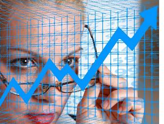
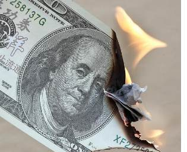

Camgirls welche plötzlich auf einem Haufen Geld sitzen, denken oftmals nicht an später. Zu groß die Versuchung, den Lebensstandard zu heben, durch sofortiges Geld ausgeben. Schließlich hat man ja genug davon! Hat man wirklich genug davon? Wer seinen Lebensstandard nur minimal hebt, verzehnfacht leicht seine Ausgaben. Letztendlich ist der einfache Millionär genauso arm dran, wie der Hartz IV Empfänger. Er lebt zwar in besseren Verhältnissen, muss aber jeden Hunderter zweimal rumdrehen, um sein Budget nicht zu überschreiten. Dessen größere Immobilie war nicht nur deutlich teurer, sondern sorgt auch für höhere Folgekosten (Personal, Instandhaltung, Steuern, Versicherung, Möblierung). Dessen bewusstere und vollwertige Ernährung sei ihm vergönnt, schlägt aber ordentlich ins Kontor. Sein Fahrzeug der gehobenen Mittelklasse kostete mit 50.000 EUR gut 45.000 EUR mehr, als der gebrauchte Kleinwagen des armen Mannes. Der einzige Unterschied Im Alltag besteht letztlich im höheren Prestige, welchen der schnittige Volkswagen mit sich bringt. Der vermeintlich Wohlhabende möchte, dass man ihm seinen Wohlstand ansieht. Was für den Geschäftsmann eine Notwendigkeit sein kann, stellt für das Camgirl keinen Vorteil dar. Im Gegenteil! Es schafft sich Neider, Hater und falsche Freunde, wenn es seinen Wohlstand zur Schau stellt. Und der ist schnell wieder weg! Noch schneller geht's, wenn man einem Kaufrausch oder der Prunksucht verfällt. Besser ist es, wenn man sich hin und wieder etwas gönnt, seinen bodenständigen Lebensstiel aber beibehält.
Geld das nicht leichtfertig ausgegeben wird, steht für Investitionen in die eigene Arbeit und für profitable Geldanlagen zur Verfügung. Sparen ist quasi die 5. Säule des Profits! Der wachsende Wohlstand resultiert nicht nur aus den Einnahmen, sondern auch aus den nicht getätigten Ausgaben. Das Gegenteil kann der Fall sein, wenn man sich kaputt spart oder in zu günstige Qualitäten investiert. Wer billig kauft, kauft zweimal! Unser Anliegen ist es keinesfalls, das Camgirl zum Geizkragen zu erziehen, sondern zur bodenständigen Lebensweise zu animieren. Belohnt wird es durch unerfüllte Hoffnungen und Träume, echte Freunde und dem Ausbleiben der buckligen Verwandtschaft, welche sich doch nur am Wohlstand des Camgirls laben möchte. Die Reduktion auf das Wesentliche nimmt Verantwortung, erhält die Freude an den kleinen Dingen des Lebens und lässt einen nie vergessen, was wirklich wichtig ist, nämlich jene Dinge, welche man sich für Geld nicht kaufen kann, - Liebe, Frieden und Gesundheit.
Wir sind weder qualifiziert noch berechtigt Anlageempfehlungen auszusprechen. Beispielhaft benennen wir im Folgenden Produkte, deren Wertentwicklung wir nicht voraussagen können. Wir wollen beispielhaft aufgeführte Anlageformen nicht als Empfehlung verstanden wissen, sondern als Untermalung schöngeistigen Geschwurbels.
Im Folgenden fabulieren wir über Geldanlagen zum Zwecke der
Kapitalsicherung, Kapitalvermehrung und hochriskanten Spekulation. Die
ideale prozentuale Verteilung des Vermögens auf die benannten Bereiche, hängt
von verschiedenen Faktoren ab. So entscheidet z.B. die Höhe des Vermögens
darüber, wo man seine Prioritäten setzen und welche Form der Geldanlage man
meiden sollte. Beispiel: wer 500.000 EUR auf der hohen Kante hat, gefährdet
seinen Wohlstand kaum, wenn er 25.000 EUR in innovative aber hoch
spekulative Zukunftstechnologien wie "Quantenhonig" investiert. Wer aber
erst 50.000 EUR im Sparschwein weiß, mache bitte nicht so'n Scheiß!
Das
richtige Mischungsverhältnis richtet sich auch nach der "Großwetterlage" und
ändert sich von Zeit zu Zeit dramatisch. Das gelegentliche Umschichten, z.B.
in Erwartung einer Weltwirtschaftskrise, eines Weltkrieges oder eines
Konjunkturaufschwungs ist unabdingbar, für Erhalt und
Mehrung des Kapitals.
Geopolitische Spannungen, Pandemien und eigene Fehlinvestitionen gefährden den Wohlstand des Camgirls. Steigt die Inflation inflationär, droht sie sich zur Hyperinflation auszuweiten. Dann kann sich das Camgirl für die im Zeitfenster verdienten Millionen ein butterloses Brötchen kaufen. Setzt das Camgirl im Sinne der Kapitalvermehrung auf das falsche Pferd, droht schlimmstenfalls der Verlust des eingesetzten Kapitals. Selbst Profis erkennen das falsche Pferd mitunter erst nach dem Rennen (Wirecard...). Mannigfaltige Gründe sprechen dafür, einen nicht unerheblichen Teil seines Vermögens, in sichere und krisenfeste Geldanlagen zu investieren. In jene Anlageformen welche nicht geeignet sind, das Kapital nennenswert zu vermehren. Wir sprechen von Sachwerten wie die selbst genutzte Immobilie oder den Goldbarren. Die Meinung zahlreicher Experten, auch Betongold, Aktien, Staatsanleihen oder ETFs seien geeignet, das eigene Geld vor Inflation und globalen Krisen zu schützen, teilen wir in keinster Weise.
Wer keine Ahnung von Immobilien und den damit verbundenen Machenschaften großer Player und Finanzkapitalisten hat, läuft Gefahr auf der ersten Seite der Bild Zeitung, unter der Schlagzeile "So verlor ich mein ganzes Geld", für einen Aufhänger zu sorgen. Zahlreiche B-Promis sorgten bereits auf diese Weise für Gelächter. Die Schuld für deren Niedergang lag freilich nicht in deren Raffgier und Dummheit begründet. Ursächlich waren, nach Aussagen der Betroffenen, hinterfotzige und inkompetente Finanzberater, welche zur Investition in Schrott-Immobilien, am Rande einer Steilklippe geraten haben...
Aktien verlieren bereits stark an Wert, wenn es nur nach Inflation oder geopolitischen Spannungen riecht. Zahlreiche dieser Wertpapiere verkommen zum Papierwert, bevor der Bürger die Auswirkungen einer Hyperinflation zu spüren bekommt. Eine Ausnahme bilden Aktien jener Kapitalgesellschaften, welche aufgrund ihrer Substanz, Profitabilität und ihres krisenfesten Produktportfolios geeignet sind, schwere Zeiten leicht gebeutelt zu überstehen. Da man selten vorher weiß, in welche Richtung sich eine Krise entwickelt, lassen sich deren Profiteure nicht verlässlich voraussagen. Investiert man in die Rüstung, sorgt der unerwartete Friedensvertrag für wenig Freude. Investiert man ins Klopapier, sorgt die anschließende Überproduktion für einen besonders sauberen Arsch.
Auch die von uns genannten Investments in die selbstgenutzte Immobilie oder den Goldbarren, sind nicht so sicher wie der Tod! Denken wir nur an Rumpelstilzchen, den Bombenkrieg und an deren Folgen für den Goldpreis oder den Überbau des selbstgenutzten Luftschutzkellers. Trotzdem, wer nicht in Zigaretten und Nylonstrumpfhosen investieren möchte, dem sei von uns angeraten, sich über die genannten Anlagemöglichkeiten eigenständig zu informieren. Die unkomplizierte Goldanlage gelingt z.B. mit "Xetra-Gold", einem Gold-Zertifikat mit physischer Goldhinterlegung. Der unkomplizierte Erwerb einer selbstgenutzten Wohnimmobilie ist so gut wie ausgeschlossen, denn Immobilienmakler sind, wie auch Finanzmakler, ja, nicht alles Arschlöcher, nur ganz wenige davon, aber in 99 Prozent aller Fälle hat man halt das Pech, so eines zu erwischen...
Nicht nur aufgrund vielerorts verlangter Negativzinsen auf Sparguthaben, sondern auch weil unsere Welt ein Pulverfass ist, investieren wir z.Zt. 30% unseres Vermögens in spießige, wenig profitable aber "bombensichere" Anlageformen. Wird´s mal wieder etwas ruhiger, reduzieren wir den Anteil, lassen ihn aber nicht unter 20% fallen. Was Sie machen, ist Ihre Sache!
Auch die Kapitalvermehrung stellt im gewissen Sinne eine Form des Kapitalerhalts dar. Wer von seinem Kapital leben muss, reduziert es peu à peu. Kann man hingegen von den Kapitalerträgen leben, z.B. von den Dividenden seiner Aktien, so braucht man sein Kapital nicht anzurühren. Auch wer den Wert seines Geldes im Angesichte der normalen Inflationsrate, also der üblichen jährlichen Preissteigerung erhalten möchte, muss den Versuch der Kapitalvermehrung wagen. Grundsätzlich hat diese Form des "Kapitalerhalts" aber nichts mit der zuvor propagierten Kapitalsicherung zu tun, denn die Geldanlage zum Zwecke der Kapitalvermehrung, ist immer mit mehr oder weniger großen Risiken verbunden!
Noch vor 20 Jahren hätten wir aktiven Camgirls dringend ans Herz gelegt, ihr Geld ausschließlich in Finanzprodukte der Anlageklasse A zu investieren. Sichteinlagen, Spareinlagen, Termingelder und Sparbriefe warfen in der guten alten Zeit einen Zinssatz ab, welcher geeignet war, der normalen Inflationsrate entgegenzuwirken. Das Camgirl hätte sich voll und ganz auf seine Arbeit konzentrieren können. Heute bekommt man auf derlei Finanzprodukte bestenfalls keinen Negativzins, während die jährliche Preissteigerungsrate beängstigende Ausmaße angenommen hat. Die Anlageklasse A bekommt von offizieller Seite das Merkmal "kein Finanzrisiko" attestiert. Konnte man sich dieser Ansicht vor 20 Jahren mit einem zwinkernden Auge anschließen, kann man darüber heute nur verstört mit dem Kopf wackeln. Derlei Anlagen verlieren ihren Wert peu à peu (Inflation) oder abrupt (Hyperinflation). Bricht das ganze System zusammen (Kartenhaus Europa), helfen kein gesetzliches und kein freiwilliges Einlagensicherungssystem, dann war die Investition in die "risikolose" Anlageklasse A, das dümmste und riskanteste Unterfangen überhaupt. Finanzprodukte der Anlageklasse A eignen sich weder zur Kapitalsicherung, noch zur Kapitalvermehrung. Sie sind ggf. geeignet, sein Geld für kurze Zeit zwischenzuparken.
Heute tun aktive Camgirls gut daran, auf ausgewählte Finanzprodukte der Anlageklassen C und D auszuweichen. Auf jene Finanzprodukte, welche Sachwerte wie Edelmetalle oder Firmenanteile (Aktienfonds) abbilden. Den großen Reibach macht man damit genauso selten wie eine Bauchlandung. Zins- und Kursrisiko sind nicht von der Hand zuweisen. Bricht das Finanzsystem zusammen, bleiben jedoch die Sachwerte! Auch die verlieren dabei an Wert, erholen sich aber mit einsetzender Konjunktur. Wenngleich schon der Aktienfond an sich die Streuung des Kapitals beinhaltet und so das Risiko reduziert, sollte man sein Kapital über mehrere Fonds verteilen. Das in den einzelnen Aktienfonds enthaltene Portfolio, sollte man sich ganz genau anschauen! Zahlreiche Unternehmen sind ein sachwertloses Sinnbild des faulenden Finanzkapitalismus. Ein damit bestückter Fond ist sehr volatil. Er kann große Gewinne, aber auch große Verluste mit sich bringen.
Das gut situierte und noch aktive Camgirl sollte sich gründlich überlegen, ob die Investition in vergleichsweise riskante Einzel-Aktien (Totalverlust droht!) notwendig und sinnvoll ist. Zeit, Nerven und Energie benötigt die aktive Erotik-Streamerin für ihre Arbeit. Extensive Arbeit und Kapitalvermehrung parallel und somit halbherzig zu betreiben, halten wir für keine gute Idee! Andererseits kann das gut situierte Camgirl durchaus einen Teil seines Geldes, jenen den es langfristig entbehren kann, etwas riskanter investieren, ohne seine sozialen Verhältnisse zu gefährden.
Wer sich während seiner aktiven Zeit als Camgirl, mit der Kapitalvermehrung beschäftigen möchte, möge sich dabei auf den Erwerb von Aktien etablierter, substanzbehafteter, nicht überbewerteter und langfristig profitabler Unternehmen beschränken. Jene Aktien welche nicht plötzlich in den Himmel wachsen, den Anleger aber auf Dauer mit einer anständigen Dividende erfreuen. Jene Aktien die langfristig peu à peu an Wert zulegen, ohne bei jeder kleinen Krise in den Keller zu rauschen. Da es auch für jene Unternehmen keine Bestandsgarantie gibt, ist es unerlässlich sein Kapital zu streuen, also auf mehrere Unternehmen zu verteilen, welche nicht in der gleichen Branche aktiv sind. Welche dieser Aktien sich tatsächlich gut entwickeln, kann man nicht wissen, sondern anhand eigener Recherche und Erfahrung bestenfalls erahnen. Man muss sich also mit der Materie befassen, klein anfangen, Lehrgeld zahlen und ein gesundes Maß an Demut entwickeln, bevor man mit gebremstem Schaum durchstarten kann.
Um sich weiter auf die Arbeit als Camgirl konzentrieren zu können, ohne den Chat ignorieren und ständig die Kurse und Charts im Auge haben zu müssen, empfehlen wir die Geldanlage auf solide Dividendentitel innerhalb des DAX40 zu beschränken. Später, im Ruhestand und mit gewachsener Erfahrung, kann man auch andere Märkte unter die Lupe nehmen.
Warum sollte es ein Dividendentitel sein? Zahlt ein Unternehmen seit vielen Jahren regelmäßig eine jährliche Dividende (Gewinnbeteiligung) aus, ist dies ein wertvoller Anhaltspunkt für dessen Seriosität und Rentabilität (in der Vergangenheit!). Ist ein derartiges Unternehmen gut aufgestellt und für die Zukunft gerüstet (Produktportfolio, Forschung, Innovationen, Übernahmen), so sind die Chancen hoch, dass die Dividenden auch in Zukunft fließen. Nebenbei bemerkt, ist die Dividende auch für sich genommen eine feine Sache...
Auch in der Vergangenheit bewährte Dividenden-Titel können in Schieflage geraten, wenn es an jener Substanz fehlt, welche zur Überstehung schwerer Krisen notwendig ist. Man sollte also vorher eruieren, ob ein Unternehmen fair bewertet ist, über entsprechende Sachwerte und Eigenkapital verfügt, oder ob es in ungesundem Maße auf Fremdkapital aufbaut. Wie schnell sich der Kurs in die falsche Richtung bewegen kann, zeigen z.B. die Glyphosat-Rechtsstreitigkeiten in den USA und deren Folgen für die Bayer AG. Waren die Folgen für den Aktienkurs auch katastrophal, so war der Fortbestand des Unternehmens, dank seiner Größe und Substanz, nie in Gefahr. Die Dividenden fließen munter weiter, auch wenn sie etwas geringer ausfallen. Andere Unternehmen, jene mit großer Fresse aber nix dahinter, wären in so einem Falle zusammengefallen wie ein Kartenhaus. Fairerweise muss man dazusagen, dass kein anderes Unternehmen so blöd gewesen wäre, Monsanto zu kaufen...
Bei der Recherche zwecks Erlangung von Unternehmenskennzahlen, helfen zahlreiche kostenlose Finanzportale wie finanzen.net, onvista.de oder traderfox.de. Da derartige Portale zumeist nicht ganz uneigennützig agieren, sollte man deren Analysen und Empfehlungen mit Misstrauen begegnen! In puncto Unternehmenskennzahlen, Realtime-Kurse und Charts sind sie aber ganz nützlich!
Spekulation hat grundsätzlich nichts mit seriöser Kapitalvermehrung zu tun. Sie steht dem Spielgeld näher als der Geldanlage. Sie ist zumeist unethisch, immer hoch riskant und verantwortlich für allerlei Krisen und Blasenbildungen. Das Gebiet der Spekulation ist ungeheuer vielfältig. Wir verstehen vielleicht 1 Prozent davon und wollen uns deshalb das Schwadronieren an dieser Stelle ersparen. Es wäre schlicht unverantwortlich, wenngleich wir große Freude daran hätten.
Selbst im Ruhestand sollte sich das Camgirl nicht mit Leerverkäufen, Optionsscheinen und CFDs beschäftigen! Durch "gehebelte Geschäfte" können hohe Verluste entstehen, welche bisweilen weit über den anfänglichen Kapitaleinsatz hinausgehen. Trotzdem wollen wir gut situierte Camgirls dazu verleiten, einen sehr geringen Teil ihres geldwerten Vermögens, potentiell in den Sand zu setzen! Warum?
Nun, auch das Camgirl soll ein bisschen Spaß und Nervenkitzel haben, hat es doch sonst so wenig Freude und Abwechslung im Leben.
Investiert das gut situierte Camgirl ungehebelt 25.000 EUR hoch spekulativ, verliert es schlimmstenfalls 25.000 EUR. Tut das einem Menschen weh, der 200.000 EUR in Gold und 300.000 EUR in solide Dividenden-Aktien investiert hat? Muss jeder für sich entscheiden! Auf der anderen Seite stehen die Chancen nicht schlecht, sein vermeintliches Spielgeld mittelfristig zu verzehnfachen, ohne sich allein auf sein Glück verlassen zu müssen.
So gibt es tatsächlich Formen der Spekulation, wo man mit Hilfe von Weitsicht, Logik und Strategie berechtigte Chancen hat, auf der Gewinnerstraße zu landen. Wir denken da ganz speziell und ausschließlich an Zukunftstechnologien mit Potential. Mit einem Potential, welches die breite Masse der Anleger noch nicht erkannt hat. Wir denken an Aktien bisweilen verlustreicher, weil noch im Aufbau befindlicher Unternehmen, welche noch nicht gehypt und überbewertet sind. Um es plastischer und verständlicher darstellen zu können, wollen wir es an einem realen Beispiel festmachen:
Wasserstoff besteht aus Wasser und Stoff. Er soll wohl geeignet sein, alles bisher Dagewesene zu ersetzen?! Ein Bekannter von uns erkannte das ungeheure Potential des Wasserstoffs schon Mitte 2019. Na ja, vielleicht nicht das Potential des Wasserstoffs, sondern das Potential damit Geld zu verdienen. Es war die Zeit in der Greta lieber 20x in den Atlantik schiss, anstatt einmal darüber zu fliegen. Schließlich flogen die Flugzeuge noch nicht mit Wasserstoff. Jedenfalls erkannte der gute Bekannte, übrigens ein feiner Mensch, dass das wachsende Ökofritzentum mit hoher Wahrscheinlichkeit, für einen Hype bestimmter Technologien und Zweige der Ökoindustrie sorgen würde. Wasserstoff schien ihm ein aussichtsreicher Kandidat, als großer Gewinner unter den verschiedenen Zukunftstechnologien hervorzugehen, denn er bewährte sich schon in der Vergangenheit. Denken wir nur an an die Hindenburg über Lakehurst oder an den Weltfrieden dank Abschreckung (Wasserstoffbombe). Für hohe Profite würde jedoch erst der Durchbruch als Energieträger sorgen. Der ist bis heute nicht gelungen und wird in 20 Jahren nicht gelingen. Bezüglich des Aktienkurses spielt das jedoch (erst mal) keine Rolle! Wird eine Technologie gehypt, z.B. durch das pseudo-panische Gefasel von der "Ökoindustrie" geschmierter Klimaerwärmungs-Theoretiker, kann ein Aktienkurs, unabhängig der Erfolgsaussichten des dahinter stehenden Produktes, durch die Decke gehen.
Die Leistung des guten Bekannten bestand darin, das Potential der Brennstoffzelle rechtzeitig erkannt zu haben. Rechtzeitig bevor die Wasserstoff-Technologie von der breiten Masse entdeckt und gehypt wurde. Dank seiner Weitsicht hatte er also nun die Möglichkeit auf den Zug aufzuspringen, bevor sich dieser in Bewegung setzte. Doch er hatte ein Problem! Auch wenn er sich sicher war, welche Zukunftstechnologie das Rennen machen würde, so konnte er doch nicht wissen, welche Firma letztlich davon profitiert?! Doch auch dafür fand das clevere Kerlchen eine Lösung. Was hat er gemacht?
Er investierte je 5000 EUR in 5 verschiedene Wasserstoff-Unternehmungen. Deren Aktien waren zu dem Zeitpunkt noch "Pennystocks", also das Papier nicht wert, auf das sie gedruckt wurden. Pessimistisch wie er ist, mutmaßte er, dass 4 der 5 Firmen auf der Strecke bleiben, was einen Verlust von 20.000 EUR bedeutet hätte. Peanuts! Warum? Die eine Firma welche sich am Markt behaupten würde, mutmaßte er, tät die Sache locker rausreißen! Aufgrund des niedrigen Einstiegskurses und des enormen Potentials, schien ihm eine Wertsteigerung von 1000% nicht unangemessen. Und er lag völlig falsch! Keiner der 5 Hoffnungsträger blieb auf der Strecke. Einer erfüllte die Erwartungen nicht, konnte aber verlustfrei abgestoßen werden. Vier der fünf Hoffnungsträger gingen derart durch die Decke, dass ihm die Bodenhaftung verloren gegangen ist. In dieser Phase war er nur schwer zu ertragen, der Geizkragen. Aus 25.000 EUR wurden (zwischenzeitlich) 250.000 EUR.
Doch nun ist unserem Bekannten etwas Peinliches passiert, über das er nicht gerne spricht. Aufgrund seiner Raffgier hat er den rechtzeitigen Absprung verpasst. Doch was war geschehen?
Die sogenannten Hoffnungsträger verfügen naturgemäß über keine Substanz.
Sie werden getragen von Hoffnungen, Träumen und Perspektiven. Sie werden gehypt, weil sie in ferner Zukunft große Gewinne erahnen lassen. Bis auf
weiteres basieren sie auf Fremdkapital und machen Jahr für Jahr riesige
Verluste. Die Aufbauphase verschlingt Millionen, es fehlt an Abnehmern und
die Produkte sind zu teuer. Dividenden sind die nächsten 20 Jahre nicht zu
erwarten.
Die Aktien derartiger Unternehmen sind sehr volatil. Hält Greta
eine flammende Rede, steigen sie im Wert um 10%. Wird ein Förderprogramm für
alternative Energien angekündigt, steigen die Aktien um 10%. Verteuert sich
der Ölpreis, steigen die Aktien um 10%. Explodiert eine
Wasserstoff-Tankstelle, fallen sie um 20%. Ist wie durch ein Wunder niemand
zu Schaden gekommen, steigen die Aktien um 30%.
Kommt jedoch ein Coronavirus daher, verschwindet der Wasserstoff von der
Tagesordnung. Greta ist plötzlich out und muss wieder zur Schule gehen.
Förderprogramme für Wasserstoff werden auf Eis gelegt, denn das Geld wird
anderweitig benötigt. Das Kapital wird abgezogen, Stop-Loss-Orders greifen
und der Aktienkurs kollabiert. In
Krisenzeiten braucht es
Aktien mit Substanz und keine Luftschlösser!
Unser Bekannter hatte nun allen Grund sich zu ärgern, aber keinen um sich aufzuhängen. Zum einen hatte er nur einen kleinen Teil seines Vermögens spekulativ investiert. Zum anderen war er auf den Zug aufgesprungen, bevor sich dieser sich in Bewegung setzte. Letztendlich reduzierte sich sein Gewinn von über 1000% auf ungefähr 350%. Von der eigenen Mentalität hängt es ab, wie man einen derartigen Schicksalsschlag verwindet. Er hatte ein bisschen zu knabbern, wollte er sich doch trotz seines Geizes mit einem Jeep Wrangler belohnen. Der wäre zwar immer noch drin, aber da kennen Sie ihn schlecht. Da es den in Deutschland nur noch mit Automatik gibt, will er ihn eh nicht mehr haben (Weiberauto). Der 16 Jahre alte Mini-Van tut es auch. Zur Not setzt er sich halt in den Zug. Und der hat wieder Fahrt aufgenommen! Ein dreifaches Hoch auf den Krieg! Corona ist von der Tagesordnung verschwunden, das Gas wird teurer, Energieautarkie das neue Ziel. Dazu braucht es (den Glauben an) Wasserstoff...
Spekulation macht Spaß und bringt Schwung ins Gefühlsleben! Wer max. 5% seines eigenen Kapitals hernimmt, um damit ungehebelt zu spekulieren, kann mehr gewinnen als verlieren. Schlimmstenfalls verliert er 5% seines Vermögens, aber nur marginal an Lebensqualität. Führen anfängliche Gewinne zur Spielsucht, oder spekuliert man mit Fremdkapital, wird aus dem Spaß bitterer Ernst. Die Folgen sind Herzinfarkt, Insolvenz, Alkoholismus oder gar Selbstmord.